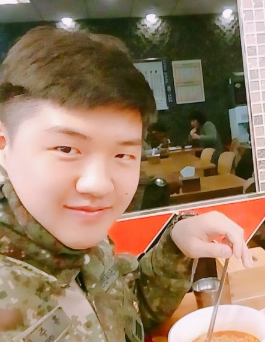
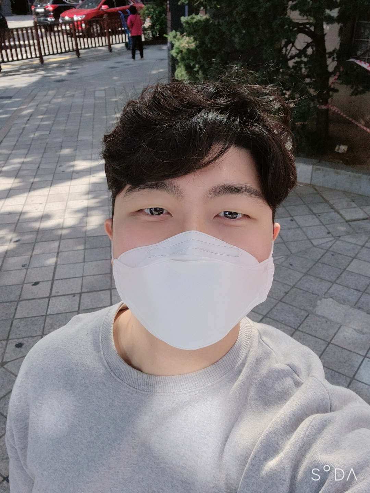

선문대학교 컴퓨터공학부
koy321@naver.com
프로젝트를 마음먹은 계기는 오래전 네이버 카페 "안아키" 사태가 터졌을 무렵부터였다. 죄 없는 아이들이 잘못된 믿음으로 인해 살면서 받을 고통은 지금와서도 상상조차 할 수 없을 것이다. 씁쓸한 뒷맛을 남긴 이후로도 오랫동안 의료사고로 사람이 죽었다던가 어느 무뢰한 간호사가 고의로 신생아를 떨어트려 아이가 장애를 안고 살아가게 되었다는 이야기들을 오랫동안 들어왔고 코로나가 퍼지던 초기에 의사면허 박탈을 이유로 의사들이 들고 일어선 뉴스를 보았을 때 더는 참을수가 없었다. 환자를 돌보아야 하는 그들이 지금도 앞으로도 환자를 그저 돈통으로 본다면 어느 누가 병원을 신뢰하겠는가. 그렇게 처음 계획한 '철밥통 부수기'가 걸러지고 정제되어 나온것이 지금의 웹 개발물인 MASS(Medical Accident Statistics Site)다. 좀 더 많은 사람들에게 의료사고 비중과 그로인해 발생하는 의료분쟁때문에 발생하는 세금을 통해 나가는 대불비용 규모등을 알림으로써 대중들에게는 대한민국 의료산업에 대한 현실을, 의료업 종사자들에게는 몰지각한 행위에 대한 자각을 유도하는 것이 이번 프로젝트의 궁극적인 목표인 셈이다. 물론 이런 아이디어를 이해시키고 개발팀원들을 굴리고 조리하는 일이 평탄하지만은 않았다. 내 일도 바쁜데 팀원들 하나하나 내가 조종하듯이 다룰 수 없었고 나 역시 사람인지라 실수할 수 밖에 없어서 프로젝트의 초반은 불안하기만 했다. 그럼에도 교수님께서는 잘하고 있다고 격려해주셨고 난 이번 개발물에 대한 가능성을 보고 다른 뛰어난 개발자들을 모아 프로젝트를 이어나갈 것이다. 어느 유명만화 에서 "도망친 곳에 낙원은 없다"는 대사가 있다. 법이 바뀌지 않고 사람들의 인식이 바뀌지 않은채로 문제를 방치하고 도피하기만 한다면 상처에 고름끼듯 사회를 좀먹게 될 것이라는 소리다. 위대했던 선인들의 삶이 세상을 좋게 바꾸기 위한 의지에서 비롯되었듯이 나 역시 이번 프로젝트 개발을 통해 의지를 불태우고자 한다. 더 나은 미래를 위하여.
suhyung1006@naver.com
이번 프로젝트는 저에게 웹 사이트에 대한 숙련도를 높힐 수 있는 귀중한 경험이었다고 생각합니다. 프로젝트의 기획에 대한 확실한 이해, 그리고 그에 따른 서버측 구조와 설계의 중요성을 배울 수 있었습니다. 또한 혼자서 개발하는 것이 아니라 프론트엔드, 백엔드 개발을 나누어 협업하다 보니 더욱 더 자신이 맡은 파트에 집중할 수 있었습니다. 혼자만의 개발과 다른 사람과 함께하는 개발은 정말 천지차이라는 것을 깨닫게 되었습니다.
wusemr2@naver.com
프로젝트를 진행하는 동안 제가 처음 접하는 기술과 언어가 있어 다소 시행착오가 있었지만, 팀원분들의 도움 덕분에 해결해 낼 수 있는 것들이 많았습니다. 특히 깃허브를 통한 작업은 조심스러웠던 부분이 많아 개인적으로 올렸다, 지웠다 하는 일을 통해 조금 더 배웠던 것 같습니다. 프론트엔드와 백엔드 및 파트 별로 나누어 협업을 하는 활동 등을 통해 프로젝트 개발 자체를 떠나서 시야를 넓힐 수 있는 좋은 경험이 되었습니다. 앞으로의 여러 프로젝트에 도움이 많이 될 것 같습니다.

xogus9715@naver.com
이번 프로젝트를 진행하면서 우리나라의 의료 실태를 다시 한번 느낄 수 있었고. 많은 의료사고와 그로 인한 의료분쟁이 많이 일어나는지 데이터를 보고 놀랐습니다. 이번 프로젝트를 통해 의료 서비스의 실체를 많은 사람이 보고 앞으로 의료 서비스가 더욱 발전할 수 있는 기회가 되었으면 좋겠습니다.